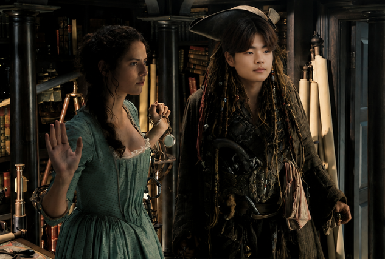
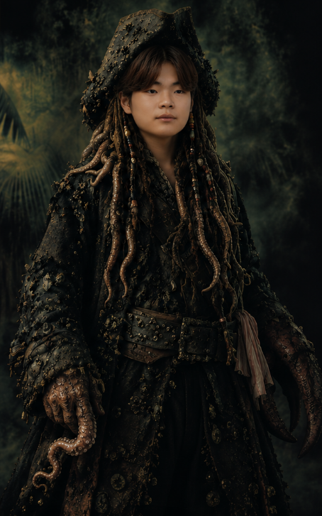
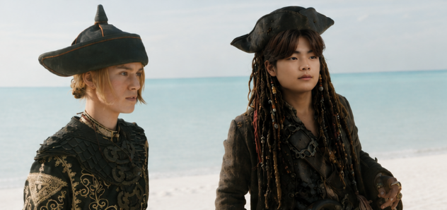
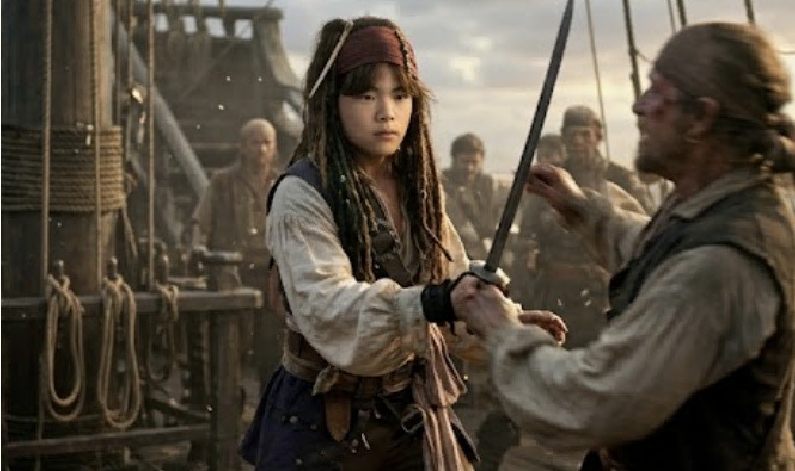

잭스패로우처럼 역경을 극복하여 나아가는 이야기




고어 버빈스키 · 2006.11.23 · 21년
고2때 예체능 계열에 크게 관심이 없었다가 어느날 예체능 쪽으로 방향성을 정해 인문계 고등학교에서 예술고등학교로 전학을 갔고 고3때 입시에서 좋은 결과를 받지 못하여 잭스패로우가 고난과 역경을 겪고도 블랙펄 호에 타 모험을 이어나가듯 재수를 결정해 1년을 더 미술입시를 하다가 계원예술대학교에 입학했다.
오동근